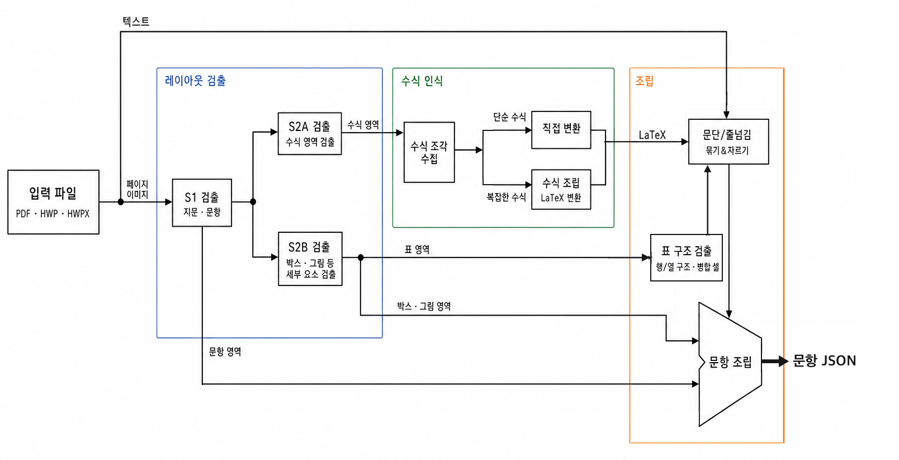

Pipeline
PDF·HWP·HWPX 문서에서 문항을 추출하고, 문항 객체와 미리보기 파일을 만드는 API입니다.
- 입력 : 문항이 포함된 문서 파일 (hwp, hwpx, pdf)
- 출력 : 개별 문항 파일 (json, pdf, svg, webp, png, hwpx)
( * 국어 과목의 경우, 지문과 문항 세트를 모두 추출합니다.) - 원문 수식, 표, 이미지, 도식, 밑줄, 굵은 글씨, 박스 보존
- 2단 구조 또는 페이지에 걸친 문항을 자동 복원
Pipeline 문항 추출 예시
개요
from kdsnr_ai import Client, ExportPreviewConfig
client = Client(api_key="YOUR_API_KEY")
doc = client.pipeline.import_file("exam.pdf", label="exam_2026")
questions = client.pipeline.extract_question(doc, subject="auto")
client.pipeline.export_preview(
questions,
"out/preview",
config=ExportPreviewConfig(type="image"),
)| 메서드 | 역할 |
|---|---|
import_file | 파일 업로드 → Document |
extract_question | pdf · hwp · hwpx → Question 리스트 (문항 이미지 · 원본 링크 포함) |
export_preview | Question 리스트 → 문항별 image · pdf · svg 파일 |
compose_hwpx | Question 리스트 → 문항별 한글 문서(hwpx) |
hwp_to_pdf | hwp · hwpx → pdf (원본 조판 보존) |
hwp_to_hwpx | hwp → hwpx |
extract_question이 반환하는 Question 리스트는 JSON으로 직렬화되고, 저장 · 수정 · 직접 작성할 수 있습니다. export_preview는 이 리스트를 문항별 파일로 저장합니다.

입력 문서에서 문항 JSON까지의 처리 경로
Question 스키마
extract_question은 문서를 문항 단위로 잘라 객체 리스트로 반환합니다. 단독 문항은 Question 하나가 되고, 하나의 지문에 여러 문항이 묶인 세트는 지시문·지문·문항들을 함께 담은 QuestionSet 하나가 됩니다. 리스트의 순서는 지면의 읽기 순서와 같고, 컬럼이나 페이지에 걸친 문항도 하나의 객체로 이어 붙어 돌아옵니다.
각 객체는 kdsnr_ai.ir 모듈의 pydantic 모델이고, JSON 구조와 1:1로 대응합니다. 모든 노드는 type 필드로 종류를 판별합니다. 문서 핸들이나 페이지 좌표 없이 내용과 구조만 담기 때문에, 파일로 저장해 두었다가 재사용하거나, 필드를 수정하거나, 처음부터 직접 작성할 수 있습니다.
{
"type": "QuestionSet",
"metadata": {
"label": "kor_2026",
"subject": "korean",
"q_nums": [38, 39],
"set_id": "3a55061cc011.s1"
},
"instruction": { "type": "Text", "text": "다음 글을 읽고 물음에 답하시오." },
"passage": [
{ "type": "Text", "text": "<bold>(가)</bold> 언어는 ..." },
{ "type": "Figure", "mime": "image/webp", "data": "..." }
],
"questions": [
{
"type": "Question",
"metadata": { "q_num": 38, "points": 3, "q_id": "3a55061cc011.q1" },
"content": [
{ "type": "Text", "text": "윗글을 이해한 내용으로 적절한 것은?" },
{ "type": "BogiBox", "content": [
{ "type": "Text", "text": "ㄱ. ..." }
] },
{ "type": "Text", "text": "① ㄱ" }
],
"q_img": "base64..."
}
],
"source": "https://kdsnr-ai-main-223982025046.asia-northeast3.run.app/v1/files/..."
}필드
| 필드 | 노드 | 타입 | 설명 |
|---|---|---|---|
type | 공통 | "Question" | "QuestionSet" | 노드 판별자. |
metadata | 공통 | Metadata | 번호 · 배점 · 과목 · 라벨 · 발급 id. |
source | 공통 | str | null | 원본 pdf를 내려받는 URL (API 키 인증). hwp · hwpx 입력은 변환된 pdf. 직접 작성한 객체는 null. |
content | Question | BodyItem[] | 발문 · 자료 · 선지를 읽기 순서대로 담은 블록 리스트. |
q_img | Question | str | null | 문항 영역을 잘라낸 PNG 이미지 (base64). |
instruction | QuestionSet | Text | 세트 지시문. |
passage | QuestionSet | BodyItem[] | 지문 블록 리스트. |
questions | QuestionSet | Question[] | 소속 문항. 각자 q_id와 q_img를 가집니다. |
블록 타입
| 타입 | 설명 | 필드 |
|---|---|---|
Text | 텍스트 문단. |
text내용 문자열. 인라인 태그와 $...$ 수식 포함font서체 — 1=명조, 2=돋움size글자 크기 (pt)align문단 정렬 — left · center · right · justify · distribute |
Equation | 한 줄을 차지하는 독립 수식. |
latexLaTeX 수식size글자 크기 (pt) |
Table | 행·열 격자 표. |
grid슬롯별 셀 id 격자 — 같은 id는 병합 셀col_ratios열 너비 비율width표 너비 (pt)border표 테두리 여부cells셀 리스트 — border · valign · content |
BogiBox | <보기>류 헤더가 달린 박스. |
label헤더 텍스트. 생략 = 보기content내부 블록 리스트 |
PlainBox | 헤더 없는 테두리 박스. |
content내부 블록 리스트 |
Figure | 그림·드로잉의 래스터 이미지. |
mime이미지 형식 — image/webpdatabase64 이미지width height표시 크기 (pt)content그림 내부에서 복원된 블록 리스트 |
Object | 본문 옆에 떠 있는 표·그림 래퍼. |
float앵커 기준 오프셋 — {dx, dy} (pt)blockTable 또는 Figure |
인라인 태그
Text.text가 나르는 표기는 다섯 가지입니다.
| 표기 | 의미 |
|---|---|
$...$ | 인라인 수식 (LaTeX). |
<u>...</u> | 밑줄. |
<bold>...</bold> | 굵게. |
<box>...</box> | 줄 안의 박스 친 구간. |
<bracket:A>...</bracket:A> | [A] 대괄호가 감싸는 범위. |
Metadata
| 필드 | 타입 | 설명 |
|---|---|---|
label | str | 문서 라벨. |
subject | "korean" | "math" | "social" | "science" | 과목. |
q_num | int | null | 문항 번호. |
points | int | null | [N점] 배점. |
q_nums | int[] | 세트의 문항 번호 목록 (QuestionSet). |
q_id | str | null | 추출 시 서버가 발급하는 문항 id. export_preview가 이 id로 문항을 찾습니다. |
set_id | str | null | 세트 id (QuestionSet). |
API 사용법
import_file
파일을 업로드하고 Document를 반환합니다.
from kdsnr_ai import Client, Document
client = Client(api_key="YOUR_API_KEY")
doc: Document = client.pipeline.import_file(
"exam.pdf",
label="exam_2026",
)| 인자 | 타입 | 기본값 | 설명 |
|---|---|---|---|
file | str | Path | — | 파일 경로. .pdf · .hwp · .hwpx만 허용, 그 외는 ValueError. |
label | str | None | None | 문서 라벨. 생략하면 확장자를 뗀 파일명. 추출 결과의 metadata.label로 전파. |
hwp · hwpx는 pdf로 변환되어 저장되며, source 링크는 이 pdf를 가리킵니다.
extract_question
문서에서 문항을 추출해 Question · QuestionSet 리스트로 반환합니다.
from kdsnr_ai import Client
from kdsnr_ai.ir import Question, QuestionSet
client = Client(api_key="YOUR_API_KEY")
doc = client.pipeline.import_file("exam.pdf")
questions: list[Question | QuestionSet] = client.pipeline.extract_question(
doc,
subject="auto",
q_img_dpi=150,
)
for q in questions:
print(q.type, q.metadata.q_num, q.metadata.points)| 인자 | 타입 | 기본값 | 설명 |
|---|---|---|---|
doc | Document | — | import_file이 반환한 문서. |
subject | str | "auto" | korean · math · social · science (별칭 kor · mat · soc · sci). auto는 문항 단위 자동 분류. |
emit_overlay | EmitOverlayConfig | None | None | 지정하면 검출 박스를 그린 pdf를 함께 반환. 반환형이 ExtractResult로 바뀝니다. |
q_img_dpi | int | 150 | 문항 이미지(q_img)의 래스터 해상도. |
결과는 지면의 읽기 순서를 따릅니다. 각 문항에는 id(metadata.q_id · set_id), 원본 pdf 링크(source), 문항 이미지(q_img)가 담깁니다. 경고(텍스트층 품질 등)는 파이썬 warnings로 전달됩니다.
EmitOverlayConfig
추출 결과에 반영된 요소를 클래스별 박스로 문서 위에 그려 받습니다.
from kdsnr_ai import Client, EmitOverlayConfig, ExtractResult
client = Client(api_key="YOUR_API_KEY")
doc = client.pipeline.import_file("exam.pdf")
result: ExtractResult = client.pipeline.extract_question(
doc,
subject="auto",
emit_overlay=EmitOverlayConfig(
classes=["inlinebox", "table", "cell"],
),
)
questions = result.questions
result.overlay.save("out/exam.overlay.pdf")| 필드 | 타입 | 기본값 | 설명 |
|---|---|---|---|
classes | list[str] | None | None | 그릴 클래스. None이면 전부. passage · instruction · question · eq · bogi · plainbox · inlinebox · bracket · table · figure · qnum · cell(표 격자). 그 외 이름은 오류. |
ExtractResult는 questions(문항 리스트)와 overlay(Document, .save(path)로 저장) 두 필드를 가지며, 문항 리스트처럼 바로 순회할 수 있습니다. hwp · hwpx 입력은 추출에 쓰인 pdf 변환본 위에 그려집니다.
export_preview
Question 리스트를 문항별 image · pdf · svg 파일로 내보냅니다.
from pathlib import Path
from kdsnr_ai import Client, ExportPreviewConfig
client = Client(api_key="YOUR_API_KEY")
doc = client.pipeline.import_file("exam.pdf")
questions = client.pipeline.extract_question(doc)
paths: list[Path] = client.pipeline.export_preview(
questions,
"out/preview",
config=ExportPreviewConfig(
type="image",
dpi=300,
image_type="png",
),
)| 인자 | 타입 | 기본값 | 설명 |
|---|---|---|---|
questions | list[Question | QuestionSet] | — | 내보낼 문항. extract_question이 반환한, id(q_id · set_id)가 있는 객체. |
export_dir | str | Path | — | 산출 파일 디렉터리. |
config | ExportPreviewConfig | None | 생략하면 기본값(type="image"). |
ExportPreviewConfig
| 필드 | 타입 | 기본값 | 적용 | 설명 |
|---|---|---|---|---|
type | str | "image" | — | image · pdf · svg. pdf · svg는 벡터(검색 · 확대 가능), image는 래스터. |
dpi | int | 300 | image | 래스터 해상도. |
image_type | str | "png" | image | png · jpeg. |
Question은 문항 영역이 파일 하나가 됩니다 — 컬럼이나 페이지에 걸친 문항은 위아래로 이어 붙습니다. QuestionSet은 세트가 실린 페이지 전체가 반환됩니다 — pdf는 한 파일, image · svg는 페이지당 한 파일.
결과는 추출 시점의 문서 기준입니다. 반환받은 객체를 수정해도 반영되지 않습니다.
compose_hwpx
Question 리스트를 한글 문서(hwpx)로 조판합니다.
from pathlib import Path
from kdsnr_ai import Client
client = Client(api_key="YOUR_API_KEY")
doc = client.pipeline.import_file("exam.pdf")
questions = client.pipeline.extract_question(doc)
paths: list[Path] = client.pipeline.compose_hwpx(
questions,
"out/hwpx",
)| 인자 | 타입 | 기본값 | 설명 |
|---|---|---|---|
questions | list[Question | QuestionSet] | — | 조판할 문항. 추출 결과 또는 직접 작성한 객체 — id가 없어도 됩니다. |
export_dir | str | Path | — | 산출 파일 디렉터리. |
문항·세트 하나가 hwpx 파일 하나가 됩니다. 결과물은 표준 서식으로 새로 조판된 문서이며, 원본 지면의 배치를 복원하지 않습니다.
hwp_to_pdf
hwp · hwpx 문서를 원본 조판 그대로 pdf로 변환합니다.
from pathlib import Path
from kdsnr_ai import Client
client = Client(api_key="YOUR_API_KEY")
pdf_path: Path = client.pipeline.hwp_to_pdf(
"exam.hwp",
"out/exam.pdf",
enable_vec=True,
)| 인자 | 타입 | 기본값 | 설명 |
|---|---|---|---|
file | str | Path | — | 파일 경로. .hwp · .hwpx. |
save_path | str | Path | — | 저장할 pdf 경로. 중간 디렉터리 자동 생성. |
enable_vec | bool | True | True=벡터 글리프 + 검색·복사 가능한 텍스트층. False=300dpi 래스터 페이지. |
hwp_to_hwpx
구형 바이너리 hwp 문서를 hwpx로 변환합니다.
from pathlib import Path
from kdsnr_ai import Client
client = Client(api_key="YOUR_API_KEY")
hwpx_path: Path = client.pipeline.hwp_to_hwpx(
"exam.hwp",
"out/exam.hwpx",
)| 인자 | 타입 | 기본값 | 설명 |
|---|---|---|---|
file | str | Path | — | 파일 경로. .hwp. |
save_path | str | Path | — | 저장할 hwpx 경로. 중간 디렉터리 자동 생성. |